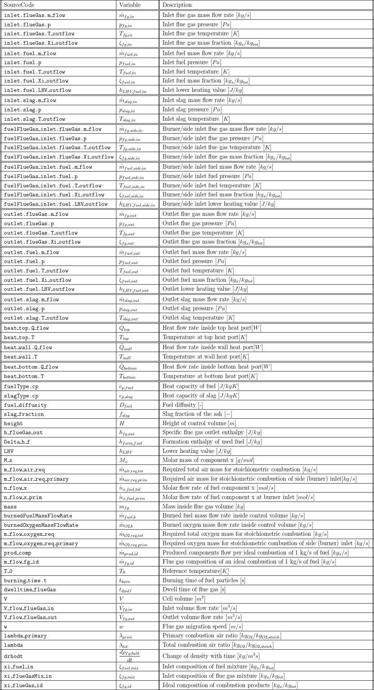
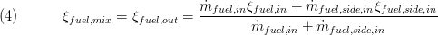
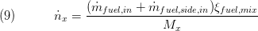
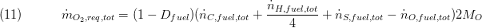
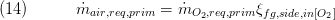
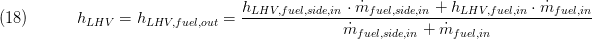
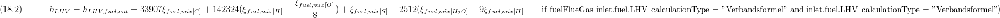
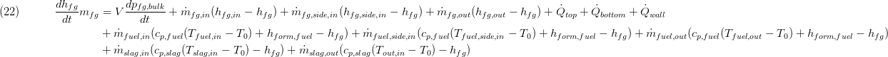
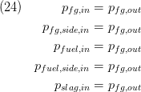
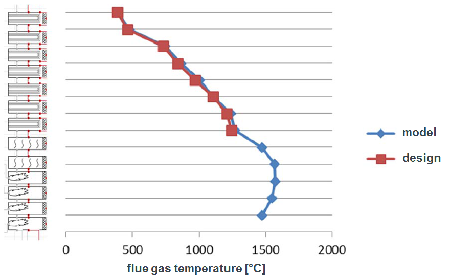

Burner L2 Dynamic
Created Tuesday 18 March 2014
A 0d-burner volume model with dynamic mass and energy balance considering heat exchange with neighbouring furnace models and boiler casing walls.
1. Purpose of Model

This model is well suited to model the burner areas of a boiler. In combination with Hopper_L2, FlameRoom L2 Dynamic and FlameRoomWithTubeBundle L2 Dynamic models a 1-dimensional boiler model can be developed which is discretised in flow direction. Radiative and/or convective heat transfer between linked furnace models or boiler casing walls can be calculated using replaceable models.
2. Level of Detail, Physical Effects Considered and Physical Insight
2.1 Level of Detail
Referring to Brunnemann et al. [1], this model refers to the level of detail L2.
2.2 Physical Effects Considered
- dynamic conservation of energy (neglecting kinetic energy terms)
- dynamic conservation of mass
- combustion of unburnt fuel from lower burner or flame room models is considered
- outlet composition is calculated according to the elemental composition of the burnt fuel in the replaceable model CoalReactionZone
- enthalpy of formation is calculated for an idealised combustion with the flue gas composition and the elemental composition and the lower heating value of the burnt fuel
- the lower heating value of the burnt fuel is given or calculated according to the "Verbandsformel"
- calculation of radiative heat transfer between connected models
- calculation of radiative or convective heat transfer to boiler casing walls
- constant pressure (until now no pressure losses are implemented)
2.3 Level of Insight
Heat Transfer
The following listed heat transfer models are the recommended ones. Other heat transfer models (e.g. generic ones: Generic HT) can be chosen to simplify the model.
top (radiation to neighbored furnace volumes)
- Basics:ControlVolumes:Fundamentals:HeatTransport:Gas HT:Radiation:Radiation gas2Gas L2: calculation of radiant heat transfer between furnace models with constant emissivity and absorbance values
- Basics:ControlVolumes:Fundamentals:HeatTransport:Gas HT:Radiation:Radiation gas2Gas advanced L2: calculation of radiant heat transfer between furnace models with constant or calculated emissivity and absorbance values (temperature dependent calculation of gas and particle emissivities)
wall (radiation or convection to boiler casing walls) :
- Basics:ControlVolumes:Fundamentals:HeatTransport:Gas HT:Radiation:Radiation gas2Wall L2: calculation of radiant heat transfer between furnace model and boiler casing walls with constant emissivity and absorbance values
- Basics:ControlVolumes:Fundamentals:HeatTransport:Gas HT:Radiation:Radiation gas2Wall advanced L2: calculation of radiant heat transfer between furnace model and boiler casing walls with constant or calculated emissivity and absorbance values (temperature dependent calculation of gas and particle emissivities)
- Basics:ControlVolumes:Fundamentals:HeatTransport:Gas HT:Convection:Convection flatWall L2: calculation of convective heat transfer to boiler casing walls
Pressure Loss
No pressure losses are considered.
Combustion
The following replaceable models are used to model the combustion of fuel inside the different furnace volume models. The model for the chemical conversion of fuel can be chosen with the replaceable model ChemicalReactions. The models BurningTime and ParticleMigration are used to calculate the amount of fuel burned inside the current furnace volume. If the preset burning time is lower than the time span for the fuel particles needed to travel though the current furnace volume, the complete amount of fuel is burned inside this component. If the burning timer is higher than the particle migration time, unburnt fuel is entering the following downstream furnace model.
Chemical Reaction
- CoalReactionZone: calculates the outlet composition for combustion of the used fuel and its elemental composition.
Burning Time
- ConstantBurningTime: setting a fixed value for the time needed to burn the whole amount of fuel entering the combustion volume.
Particle Migration
- FixedMigrationSpeed: setting a fixed value for the time span needed for particles to travel through the combustion volume.
- MeanMigrationSpeed: calculates a mean value for the time span needed for particles to travel through the combustion volume.
3. Limits of Validity
- flow in design direction is considered only
4. Interfaces
4.1 Physical Connectors
ClaRa:Basics:Interfaces:FuelSlagFlueGas inlet inlet
ClaRa:Basics:Interfaces:FuelSlagFlueGas outlet outlet
ClaRa:Basics:Interfaces:FuelFlueGas inlet fuelFlueGas_inlet
Basics:Interfaces:HeatPort a heat_top
Basics:Interfaces:HeatPort a heat_bottom
Basics:Interfaces:HeatPort a heat_wall
4.2 Medium Models
- Gas Medium Model at the inlet and outlet ports and additional ones inside the volume for the calculation of combustion and mixing processes.
5. Nomenclature

6. Governing Equations
6.1 System Description and General model approach
This model is used to build up furnace models with 1-dimensional discretisation and is used together with other models of the furnace package.
The following sketch shows the modelling principle of the component. The flows of fuel and flue gas are mixed separately before being processed inside the bulk zone with nonstationary energy and mass balance (only thermal expansion considered). The amount of burned fuel takes the particle migration time and the burning time from the replaceable model BurningTime into account. The lower heating value of the fuel can either be set in the parameter dialog or is calculated from the fuel's elementary analysis according to the "Verbandsformel" from [?]. Based on the elemental composition of the used fuel and a generalised ideal fuel combustion, the formation enthalpy is calculated to be considered in the energy balance.
All chemical reactions are calculated inside the replaceable model CoalReactionZone which determines the resulting flue gas mixture according to a combustion calculation and fixed parameters for the produced amount of CO and NOx, as well as the fraction of ash turned into slag. The slag moves through the furnace models in reverse direction (downwards). The slag outlet temperature is given by a parameter.

The component exchanges heat flows with up- and downstream models (via the heat ports heat_top and heat_bottom) as well as the surrounding walls (heat_wall) which are calculated with replaceable models for heat transfer correlations. If radiative heat transfer correlations are used inside a 1-dimensional discretised (sequential model arrangement) furnace, radiative heat flows are exchanged between the directly connected models (via heat ports top and bottom) and the surrounding walls (heat port wall). The calculation is performed with view factors which are calculated inside the heat transfer correlations. The following sketch shows the modelling principle for radiative heat transfer between the sequential arranged volumes and the calculation formula for the view factor. The amount of emitted radiation is calculated for a three dimensional volume, but the radiative heat flow between the models is assumed to be exchanged between two flat surfaces with the size of the furnace cross sectional area.

6.2 General Model Equations
In the following equations, ξ describes a vector filled with mass fractions of fuel or gas compositions. The indexed brackets are used to account for a single composition species. Please have a look at the picture in the system description for an overview of the mass flow handling and mixture before entering the combustion zone.
The overall gas mass inside the volume is calculated with the mean value of the the inflowing gas mixture and the bulk density as follows:

The solid particles of fuel (here mainly coal) are neglected.
An auxiliary, static energy balance for the inflowing gas mixture is modelled to calculate the inlet mixture enthalpy:

The mixture composition is calculated as follows:

The fuel composition which enters the volume is calculated in the same manner:

The non-stationary mass balance for the flue gas is calculated as follows. Thermal expansion is considered while the pressure has no influence. Except the ash fraction, the amount of burned fuel is added to the flue gas:

with

The mass balances of slag and fuel are modelled stationary and are not effected by the thermal expansion of the flue gas:


The molar low rates of the educts are calculated as follows:

The amount of excess air is calculated for the whole control volume (λtot) and for the air/fuel mixture entering by the side inlet (λprim). Therefore the stoichiometric amount of air required to burn the side inlet (burner) fuel mass flow completely is calculated:

For the calculation of the total stoichiometric amount of air, the fuel diffusivity is taken into account too:

The fuel diffusity is calculated with the dwell time of the flue gas and the burning time of the (coal) particles to estimate the amount of fuel burned inside the control volume.

The dwell time of the fuel particles is calculated with the migration speed (calculated inside MeanMigrationSpeed for example) :

The amount of air required is calculated with the mass fraction of oxygen inside the flue gas:


The excess air for the side or burner inlet (primary) and the overall volume (not supposed to use as control parameter), including unburnt fuel from lower combustion chambers, is calculated as follows:


The lower heating value of the burnt fuel (and the unburnt fuel leaving the volume) is calculated as a mixture of the unburnt fuel from upstream sections and the fuel entering the volume through the burner inlet. The calculation is performed for a predefined value or using the so-called "Verbandsformel" for the fuel mixture:


The lower heating value is used to calculate the formation enthalpy of the used fuel. Therefore the flue gas products of an idealised combustion of 1 kg of fuel per second with the given composition are needed which are calculated inside the replaceable model CoalReactionZone. The produced flue gas flow per combustion of 1 kg of fuel per second is calculated as follows:

With the composition:

The formation enthalpy is calculated as follows:

The flue gas enthalpy inside the control volume, which is used to calculate the outlet temperature, is calculated with the following energy balance:

The resulting flue gas composition after combustion is calculated with the burned fuel mass:

No pressure loss is considered inside the component:

The resulting control volume temperature Tfg(hfg)as well as the composition ξfg are set to the corresponding stream connector variables of the component.
Summary
A summary record is available which bundles important component values.
7. Remarks for Usage
8. Validation
The adiabatic outlet temperature of this model has been validated with Ebsilon calculations at identical boundary conditions.
The image below shows the flue gas temperatures over the furnace height. As can be seen there is a good compliance with the design values.

9. References
[1] Johannes Brunnemann and Friedrich Gottelt, Kai Wellner, Ala Renz, André Thüring, Volker Röder, Christoph Hasenbein, Christian Schulze, Gerhard Schmitz, Jörg Eiden: "Status of ClaRaCCS: Modelling and Simulation of Coal-Fired Power Plants with CO2 capture", 9th Modelica Conference, Munich, Germany, 2012
10. Version History
- 2013 - v 0.1 - initial implementation - L. Nielsen, A. Thüring, TLK-Thermo GmbH
Backlinks: ClaRa:Components:Furnace:FlameRoom:FlameRoom L2 Dynamic ClaRa:Components:Furnace:FlameRoom:FlameRoomAdditionalAir L2 Dynamic ClaRa:Components:Furnace:FlameRoom:FlameRoomWithTubeBundle L2 Dynamic ClaRa:Components:Furnace:Burner:Burner L2 Static